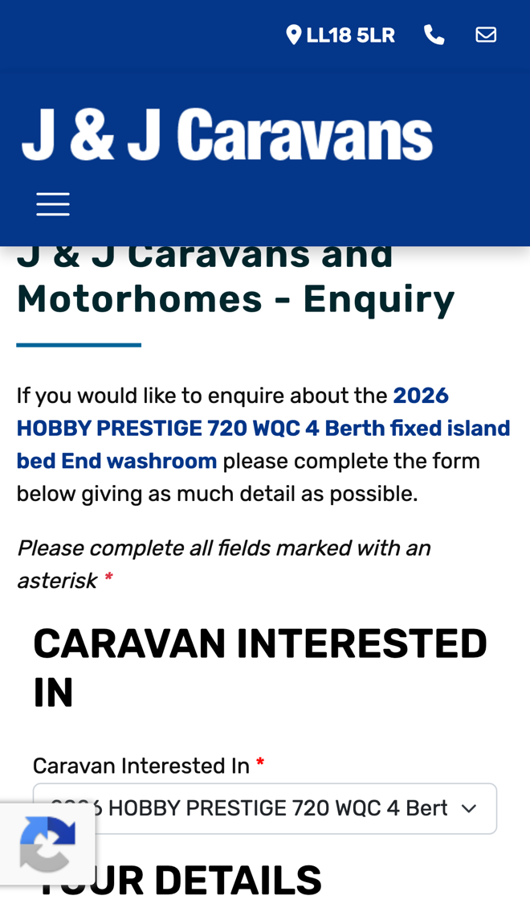
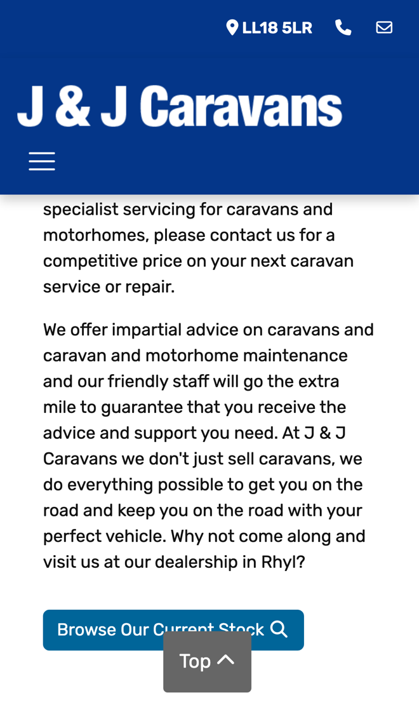

J & J Caravans: more viewings booked, more services booked
I went through your website on a phone, the way someone looking for their first caravan would, and read your showroom, enquiry form, servicing page and reviews. Your stock is easy to search and your customers clearly rate you. Where I think you'd sell more, and book more servicing, is what happens after someone presses Enquire Now.
What's already working
Three things I'd change
Let buyers book a viewing
The Enquire Now form asks for an address, post code and up to three phone numbers, but not when they'd like to come and see the caravan. Sunday is "By Appointment", and one review says "They completed a video viewing for me prior to the visit".

Someone who finds the right caravan at nine at night wants to know when they can see it. While they wait for a call back, they're still looking at other dealers.
- Each advert gets a Book a Viewing button next to Enquire Now.
- They pick a time Monday to Saturday, a Sunday appointment or a video viewing, and get a confirmation with directions to Kinmel Bay.
- You get the booking with the caravan, plus any part exchange or finance questions, and they get a reminder the day before.
Book services online with a price
Your servicing page says "please contact us for a competitive price on your next caravan service or repair." There's no form or price list for servicing on the site.

Every service starts with a call to agree a price and a date. Owners looking in the evening have to remember to ring you the next day.
- A short form asks for the caravan or motorhome, single or twin axle, and the work they want.
- It shows your guide price and your next free dates, and they pick one.
- The booking goes in your diary, and they get a reminder the day before to drop it off.
Remind owners when a service is due
Your servicing page says "we don't just sell caravans, we do everything possible to get you on the road and keep you on the road". Nothing on the site reminds the people who bought from you when their caravan is due a service.
Every caravan you sell will need servicing. A reminder at the right time brings that owner back to you rather than to another workshop.
- When you sell a caravan, the owner's details and the sale date go on one list.
- Before the anniversary, they get a friendly text with a link to book a service with you.
- You see who has booked and who hasn't, and the reminder comes round again each year.
Your website, answering for you
An assistant that answers the questions you get asked again and again, at any hour. These answers come only from your own website: your opening hours, your Caravans Wanted page and your finance page.
Anything it can't answer, it passes to you with the customer's details.
What happens next
For five local businesses I'm setting up one of these for free, in return for an honest review. Pick whichever would help most.
I'm Tom Williams and I run Tomoni-AI. If a 20-minute chat would help, reply to my email or give me a ring.
Call 07971 512158Email Tom